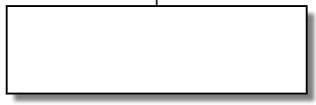
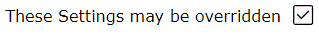
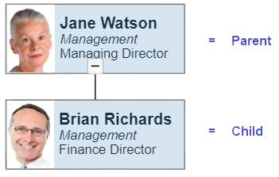
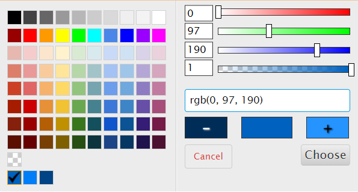
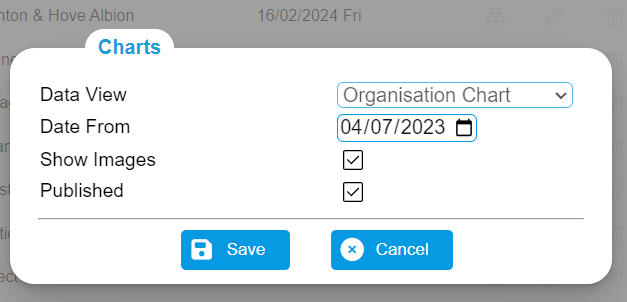
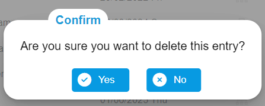
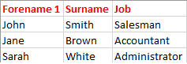
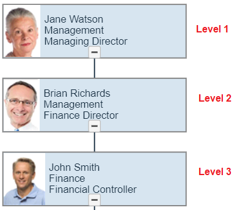
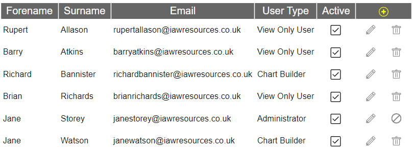
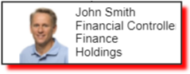

.png)
Glossary
An Administrator is a User who can add, delete and maintain information about other Users and create charts.
An Assistant is a reporting relationship that is intended to represent it as not being superior to the Nodes beneath it within a chart.
The Attributes are the characteristics of the chart and its Nodes. These include the size of each Node and the colours that are used within the chart.
The Background is the area that is displayed either within a Chart or behind the web forms which can be defined as being one of either:
- an Image,
- a Gradient or
- a Single Colour.
The Background Colour is the colour that is specified by the Background Colour Icon.
The Banner is the area at the top of each Web Form that contains the Menu button (
), Brand Logo, a background colour, the name of the Web, the name of the user and a Log Out icon.
The Border is the area that surrounds a Node.

Brand
A Brand is the group of colour and image settings that has been defined to represent a Client's recognisable identity.A Button is a clickable area within a web form that is rectangular in shape and contains a description of the action that is to be performed.
Example
Chart Builder
A Chart Builder is a User who is able to create chartsThe Chart Buttons are used to display Further Information that may be held for a Node.
These buttons may be set to appear as either Buttons below the Node or Icons on the left of the Node.
A Checkbox is a Control that has a description and can accept a response of either a Yes or a No. Example

A Child is a Node that reports to its Parent Node.

Client
A person or organisation that is a client / customer of the vivichart service.A Co Parent is a Data Node that exists within a Parent Group.
Example
The Team is the Parent Group.
Arthus Browning and Jill Barnett are Co Parents.
The collapsed or expanded state of a Node determines whether its child Nodes are visible or not.
An Icon that allows a colour to be selected for either the Text, Text Background, Background, Border or upon 'something' being hovered over.
Two or more icons that allow for a colour to be specified.
Example
The pop up display that allows a colour to be selected from a list of available colours or defined more precisely.

The Content (or Content Area) is the area within a Web Form that allows the display and entry of information.
Control
A Control is a means of allowing a User to select from two or more options how a process is to function / operate.
Data Node
A Data Node is a Node that has been populated with information from a Data View..Data Source
A Data Source is the information within a spreadsheet’s worksheet or another type of data that has been imported into vivichart.A Data Type is one of either a
- Date
- Number
- Text
Data View
A Data View is the group of Fields that have been selected from a Data Source to appear within the lines of a Data Node.A Default is a value, colour or other setting that will be applied unless it is subsequently changed or overriden.
For example, the Default colour of text for all Nodes might be black but it could be overriden for a specific Node to be blue.
Descendant
A Descendant is a Node that is directly descended from another (superior) Node.A Dialog is a pop-up area within a Web Form that allows the display and/or entry of information and/or prompts for a response.
Examples:


A Drop Down List is a Control that allows a User to select one of a number of options.
A Drop Down Option is a row within a Drop Down List.
Example
A Field is a unique description of the rows of information within a Data Source.
For example, 'Forename 1', 'Surname', 'Job.'
It can appear as a column heading within Lists and as a description alongside its corresponding data within other types of Web Form.
For example,
Forename 1 John
Surname Smith
Job Salesman
File Attachment
A File Attachment is a file that has been attached to/included within an email and, in the case of vivichart, with the intention that the contents of this file will create a new Occurrence of a Data Source.TO BE DEFINED
Font
A Font is a specific style of text that appears within Charts and vivichart generally.Further Details
The Further Details is the additional information that may be displayed for a Node within a chart.
A Gradient depicts a smooth and gradual transitions between colors. These can be transitions between different hues of the same color or a blend of completely different shades.
vivichart allows for each Gradient to be defined as being either:
- Linear, where the colour progressions follows a line, or
- Radial, where the colour transition goes in a circular or ellipsoid shape extending from the centre.
Linear Gradient Example:
Radial Gradient Example:
Hover
To Hover is to place the cursor over a Button, Icon, Node, a row in a List or a Tab.
A graphical symbol that initiates an action or event when clicked upon.
Examples
Delete
Help
An Image is a graphic that is used within vivichart to display a picture within
- a Node,
- a Background of a chart, or
- the Body of a Web Form.
A Level within a hierarchical chart signifies the relative position of its Nodes to the top level/first Node.

A List is a set of information that is displayed beneath one or more column headings.
Example

The Maximum Image Size is defined in the Client Settings form to limit the size of each image that can be imported.
Each Client is restricted to storing 50 megabytes of images within vivichart.Menu
A Menu is a list of Menu Options that are displayed to a User to allow for one of the options to be selected (in order to perform a specific action).The Icon and text that is displayed for each row within a Menu.
Example of the Menu Options within a Menu
The Menu Options will differ depending on the context in which a Menu is displayed.
A Node is a container within a chart that is either
- populated with information from a Selection List (a “Data Node”)
- populated wuth information from a Selection List and exists within a Parent Group (a 'Co Parent Node')
- set to being Vacant (a "Vacant Node"), or
- displayed with text that has been entered manually in order to group other Nodes (a “Text Node”).
A Note is text that can be added either to a Node or within the body of a chart.
Occurrence
The Occurrence of a Data Source is a set of data that has been imported with an unique date.
A Parent is the Node to which a Child Node reports to.
A Parent Group holds one or more Co Parent Nodes together.
Example
The Team is the Parent Group.
Arthus Browning and Jill Barnett are Co Parents.
A Pixel (as used by vivichart) is a unit of size as milimetres and miles are.
Each Pixel is very small and is usually specified in units of 10 with the aid of a Slider Bar.
Primary Data Source
A Primary Data Source is the source of the information that is used to populate a Node, a Selection List and, optionally, a pop-up form.Published
A Published chart is one that its Chart Builder has made available to be viewed by other persons.
A Related Data Source is one that shares the Unique Reference of a Primary Data Source and is used to list related information.
For example, a list of an employees’ jobs would contain the ‘employee reference’ as well as information about each job.
A Relationship Line associates two Nodes to each other within a Chart.
Root Node
A Root Node is the Node from which all other Nodes within a Chart stem from and which itself has no Parent..
A Selection List is the information from the Occurrence of a Data Source that is displayed to a user in order that the user can create Nodes within a chart and establish reporting relationships.
A Shadow is an effect that can be applied to the Border of a Node.

Sibling
A Sibling is a Node with the same Parent as another Node.Single Colour
A Single Colour is an option for the Background of a Chart or Web Form.A means of entering a number within a predefined range.
Example
A Tab Folder (or Tab) presents different information within the same Form.
In the following example, the Chart Settings Form has two Tab Folders - General and Displayed Text.
A Text Node is a Node for which lines of text have been entered manually in order to group other Nodes beneath it.
Theme
A pre-defined set of colours that may be used to create a Brand.Tooltip
A Tooltip is the descriptive text that is displayed when the cursor hovers over a Node, Relationship Line, Button or an Icon.A Node is one of either
- a Co-Parent Node
- a Data Node
- a Text Node, or
- a Vacant Node
Unique Information is the data that is held within a Field that specifically identifies a row/record of a Data Source.
For example, an 'employee reference' might identify 'John Brown' and all the other information that is held for him.
A Vacant Node is a generic term that is used to signify that a Data Node or a Co Parent Node was Made Vacant.
This name may be changed for different Data Sources. For example, ‘Expired’, ‘Vacant’, ‘Out of Use’, etc.
View Only User
A user who can view charts and is not able to change their content permanently.
A Web Form is a page of on-line information that is displayed to a User.
Example